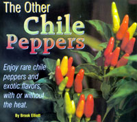

TABASCO' PEPPERSC. frutescens) Flavor: Fruity, with a green overtone similar to unripe bell peppers, or like Tabasco sauce. Heat: Medium to very hot. Description: Compact plants, 1 to 4 feet tall with an intermediate number of branches and smallish leaves. Flowers are greenish-white with blue anthers. Growing tips: Particularly good for container growing. Pods begin ripening 80 to 120 days after transplanting. Plants set 100 or more pods.